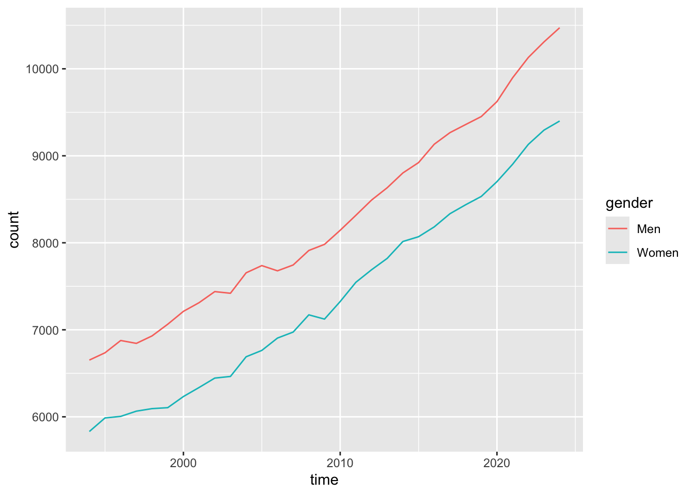
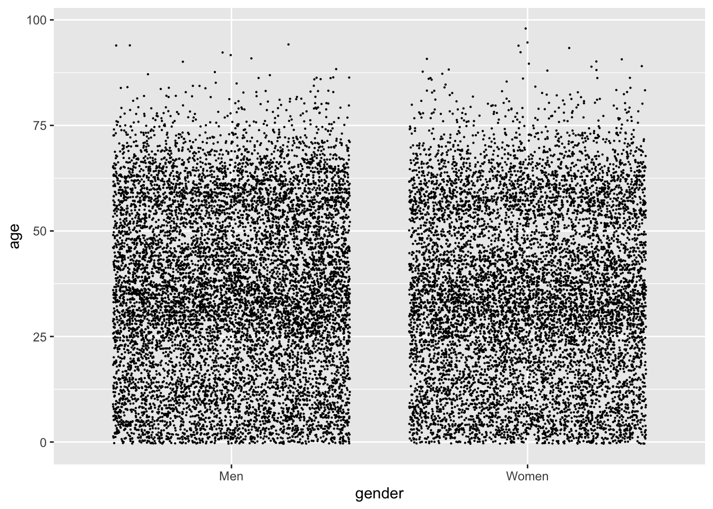
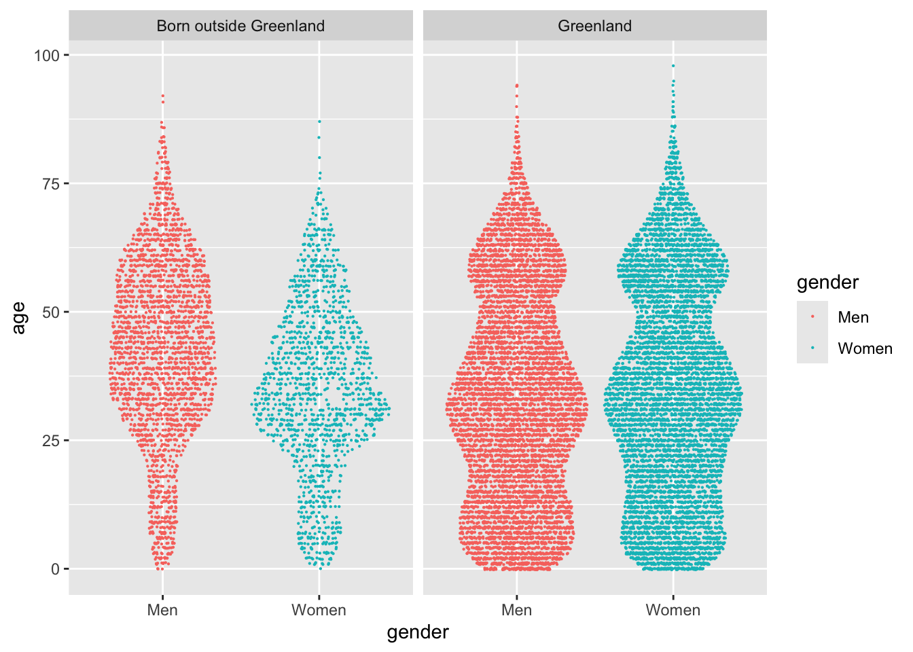
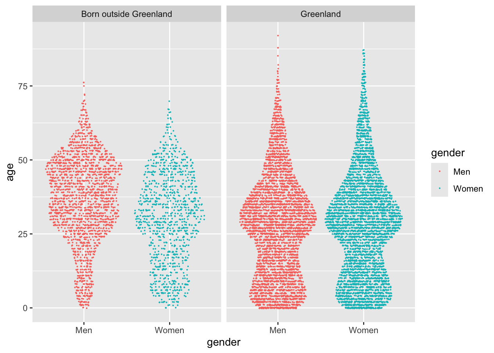
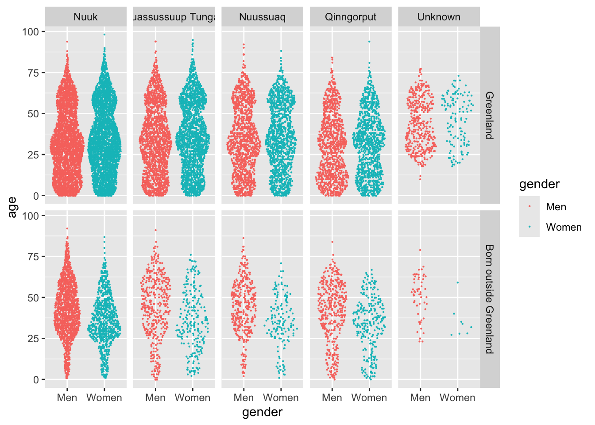

I lived in Nuuk, the Capital city of Greenland, for 3 years. Per the latest census, it has a total population of 19,872 people. I know that sounds tiny, considering that it’s an actual capital of an actual country, but it never felt small while I was there.
The city had just expanded, with many people (families especially), moving into the eastern part of town called Qinngorput.
There are now 4 distinct parts of town, called city districts: Downtown Nuuk (just called Nuuk), Quassussuup Tungaa, Nuussuaq and Qinngorput. Every district has its own vibe. Some have more immigrants and students, and some are full of families with children.
In this post, I’ll walk you through how I would go about analyzing the population structure of Nuuk, using R and the Tidyverse.
Data import
Statistics Greenland maintains a census table on the population of Nuuk, updated once a year. It’s available through the Statbank here. While I could go ahead and download the data from their site, it’s much easier to query the API from R instead.
I wrote an API wrapper for work few years ago, while I still worked full time at Stats Greenland. This was written to speed up my workflow, when working with Statbank data in R, and was mostly for internal use. We ended up publishing it on our Github.
Knowing that the Table ID for the data I’m interested in is "BEESTNUK", I can fetch the data like this:
By default, it’s going to give me all values in the mandatory variables, which in this case is time. I can explore what options I have for querying this table by calling statgl_meta("BEESTNUK"), and once I know what I need, I can make a query that looks like this:
nuk_raw <-statgl_fetch("BEESTNUK", age =0:99, citydistrict =c(1:4, 9),`place of birth`=c("N", "S"), gender =c("M", "K"))nuk_raw
# A tibble: 62,000 × 6
age citydistrict `place of birth` gender time value
<chr> <chr> <chr> <chr> <chr> <int>
1 0 Nuuk Greenland Men 1994 63
2 0 Nuuk Greenland Men 1995 75
3 0 Nuuk Greenland Men 1996 71
4 0 Nuuk Greenland Men 1997 57
5 0 Nuuk Greenland Men 1998 78
6 0 Nuuk Greenland Men 1999 65
7 0 Nuuk Greenland Men 2000 50
8 0 Nuuk Greenland Men 2001 47
9 0 Nuuk Greenland Men 2002 50
10 0 Nuuk Greenland Men 2003 54
# ℹ 61,990 more rows
This is basically a count table. Reading the first row tells me that on Jan. 1st 1994, there were 63 boys aged 0, who were born in Greenland, and lived in the Nuuk city district. That number was 75 the year after and so on.
Tidy
When tidying data, I first want to make sure that every column is a variable. That seems to be the case in this data, so my next instinct is to make sure that every row is an observation. In other words: I want to make sure that every row in this dataset is a person.
There is a cool function in the tidyr package called uncount, which repeats rows in a dataset according to a weighting variable. This means that I can turn the 63 boys I talked about earlier, into 63 rows in the dataset:
library(tidyverse)nuk_raw %>%uncount(value)
# A tibble: 484,724 × 5
age citydistrict `place of birth` gender time
<chr> <chr> <chr> <chr> <chr>
1 0 Nuuk Greenland Men 1994
2 0 Nuuk Greenland Men 1994
3 0 Nuuk Greenland Men 1994
4 0 Nuuk Greenland Men 1994
5 0 Nuuk Greenland Men 1994
6 0 Nuuk Greenland Men 1994
7 0 Nuuk Greenland Men 1994
8 0 Nuuk Greenland Men 1994
9 0 Nuuk Greenland Men 1994
10 0 Nuuk Greenland Men 1994
# ℹ 484,714 more rows
Transform
For good measure, I’m making sure that age and time are defined as numeric variables:
nuk_tidy <- nuk_raw %>%uncount(value) %>%mutate(age =as.numeric(age), time =as.numeric(time))
I plan to dive into data from the latest census data when analyzing population structure. I have to make sure that I only look at data from the latest census when doing that:
The whole point of visualizing data is to challenge your intuition. At the beginning of an analysis, you probably have a number of preconceived notions of the patterns you will find, like I did when looking at the data for the population of Nuuk.
When drawing plots, you’re not looking for images that will prove your point. Indeed, if a plot proves you right in whatever notion you had, it’s probably not worth showing. The real power of a plot is that it can fundamentally surprise you, and you should chase the surprises if you’re looking for actual insight.
Time series
Let’s look at the population growth of town over time:
Not that many surprises here. Population size has been on a steady ascent for decades, though it does seem to pick up lately. I would assume that it’s because of the new city district, right? Let’s try to visualize the growth of each district:
nuk_tidy %>%ggplot(aes(x = time, fill = citydistrict)) +geom_area(stat ="count", color ="white")
This plot changes my take on things. It seems that the expansion in Qinngorput happens at the expense of growth in other parts of town, especially Quassussuup Tungaa. The people who were likely to move to Quassussuup, ended up moving to Qinngorput once there was space for them there.
My assumption is also that there are clear differences in the composition of age between the districts. My take was always that young people lived in Qinngorput and Quassussuup, while older people lived in Nuuk and Nuussuaq. This is a plot of the mean ages for each district:
nuk_tidy %>%ggplot(aes(x = time, y = age, color = citydistrict)) +geom_line(stat ="summary", fun ="mean")
The Unknown group consists of very few people, so the pattern here is more of a data quality issue. The most interesting pattern is that of Qinngorput. I know that there are many families with children, so I’m guessing that’s what drives the (sustained) low mean age.
I also found another pattern when messing around with visualizing time series. I would expect there to be a 50-50 split of men and women in town, and for that to be pretty steady across time. Right?
nuk_tidy %>%ggplot(aes(x = time, color = gender)) +geom_line(stat ="count")

Wait, what?
Distributions
The last plot taught me that there are substantially more men than women in Nuuk. I have a couple of ideas why, one of which is distribution of age. Looking at the latest census data, I can visualise the distribution like this:
nuk_latest %>%ggplot(aes(x = age, fill = gender)) +geom_histogram(binwidth =1)
The two big humps in the distribution are millennials and boomers. Histograms colored in by a categorical variable like this, show the groups stacked on top of each other by default. This actually makes it hard to compare the groups, and can even give the false impression that there are twice as many men as women, across all age groups.
A more sensible way to compare the distributions is to position one group in front of the other, rather than on top. This is done with a position = "identity" statement:
nuk_latest %>%ggplot(aes(x = age, fill = gender)) +geom_histogram(binwidth =1, position ="identity", alpha = .6)
This tells me that number of men and women are about the same for milennials and younger, and there are more men than women in ages 40 and up.
A better way of comparing the distribution would probably be to map the genders to the x-axis, the ages to the y-axis, and representing the distribution by some kind of geom. A very common example is the boxplot:
nuk_latest %>%ggplot(aes(x = gender, y = age)) +geom_boxplot()
While the boxplot is super common, especially in statistical texts, I’ve come to dislike them for 2 main reasons:
The stats needed to draw them are not self-explanatory. You need to know what a median and IQR is, and how the whiskers are defined can even change between plots.
The rich distribution we saw earlier is completely gone.
I think a better alternative is to draw a violin. While it’s not completely apparent what determines the width of the violin, it at least makes some intuitive sense. You capture more of the richness of the distributions too:
nuk_latest %>%ggplot(aes(x = gender, y = age)) +geom_violin()
I can definitely tell that the violin representing men is wider at ages 40-50, while narrower in the same age range for women. While this is better, I still don’t have a good grasp of the size for the each group. When I’m in this situation, I would like to show the data - e.g. drawing a point for each observation. Something like:
nuk_latest %>%ggplot(aes(x = gender, y = age)) +geom_point(size = .1, position ="jitter")

While the dense regions with millennials and boomers are apparent, I’d say a jitter like this actually gives a worse sense of the distributions. The best graph I can come up with is a compromise between a violin and a jitter, called a sina. There’s a geom function for it in a ggplot2 extension called ggforce:
library(ggforce)nuk_latest %>%ggplot(aes(x = gender, y = age, color = gender)) + ggforce::geom_sina(size = .1)
Facets
I’m still interested in comparing different groups of the data set. A very effective way of doing that is to draw different facets in the plot, i.e. repeating the same plot for different subsets of the data. If I facet the plot according to the column called place of birth, I get this graph:
nuk_latest %>%ggplot(aes(x = gender, y = age, color = gender)) + ggforce::geom_sina(size = .1) +facet_wrap(~`place of birth`)

This plot genuinely blew my mind, first time I drew it. It explains why there are more men than women in the city, and tells an engaging story of the differences in the population of town. There is a definite difference in the age distribution of genders, primarily in people born outside of Greenland.
I wonder if it was always like this? I can do a quick filter on the tidy dataset, to see if it was like this in the earliest data (1994):
nuk_tidy %>%filter(time ==min(time)) %>%ggplot(aes(x = gender, y = age, color = gender)) + ggforce::geom_sina(size = .1) +facet_wrap(~`place of birth`)

Yeah, something has happened. The age distribution of women born outside Greenland is especially interesting.
One final thesis I have, is that the different districts have distinct age distributions. I alluded to this in the time series of mean ages I drew earlier. I can keep the facets of birthplace, and introduce another facet by calling facet_grid:
nuk_latest %>%ggplot(aes(x = gender, y = age, color = gender)) + ggforce::geom_sina(size = .1) +facet_grid(`place of birth`~ citydistrict)
While this plot can be a bit overwhelming, I like how it displays every variable of the dataset. All of the information is there, and it’s easy to tell if one group differs from others in the city.
People born outside Greenland explain many of the dynamics in town, especially the men aged 40 and over. Qinngorput is a definite suburb, with many kids compared to the other districts.
One final thing I want to change is the order in which the information is shown. Right now, all of the categorical variables are sorted alphabetically, which is pretty much arbitrary. I think a better way of displaying the data, is to sort them by the number of observations in each group. This can be done by using the fct_infreq function of forcats:
nuk_latest %>%mutate(across(where(is.character), fct_infreq)) %>%ggplot(aes(x = gender, y = age, color = gender)) + ggforce::geom_sina(size = .1) +facet_grid(`place of birth`~ citydistrict)

Theme
This final plot shows most of the insight I was able to gather from analysis. To make sure it’s presentable, I would spend some time making it more visually appealing. This means picking good colors for the scale, a better background color, tweaking grid lines etc.
The statgl package comes with a color scale function, which I like.
Some time should be spent thinking about a good title and caption, and what axis labels should be there. Something like this:
nuk_latest %>%mutate(citydistrict =word(citydistrict),across(where(is.character), fct_infreq) ) %>%ggplot(aes(x = gender, y = age, color = gender)) + ggforce::geom_sina(size = .1) +facet_grid(`place of birth`~ citydistrict) +scale_color_statgl() +scale_y_continuous(labels = scales::unit_format(suffix =" yrs")) +labs(title ="Where are the women of Nuuk?",subtitle ="Immigrant dynamics drive a stark gender imbalance in Greenland's capital",caption =paste0("Source: bank.stat.gl/BEESTNUK (", max(nuk_tidy$time), ")"),x =NULL, y =NULL) +theme_light() +theme(panel.grid.major.y =element_blank(),legend.position ="none" )
Some takeaways
There are many more men than women in Nuuk, and the men tend to be older.
This is in large part due to immigration.
Youngest part of town is Qinngorput, with young parents and children being a reason why.
I hope this was helpful. Small projects like this was a big part of how I got comfortable working with R and other data science tools.